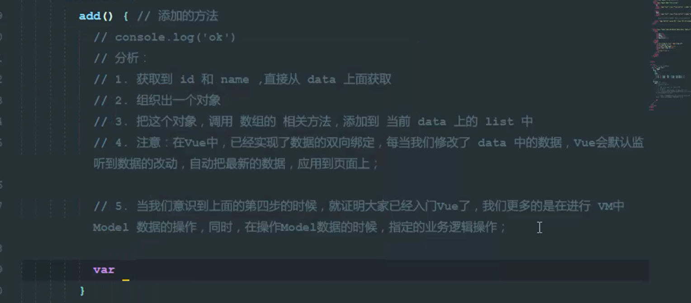
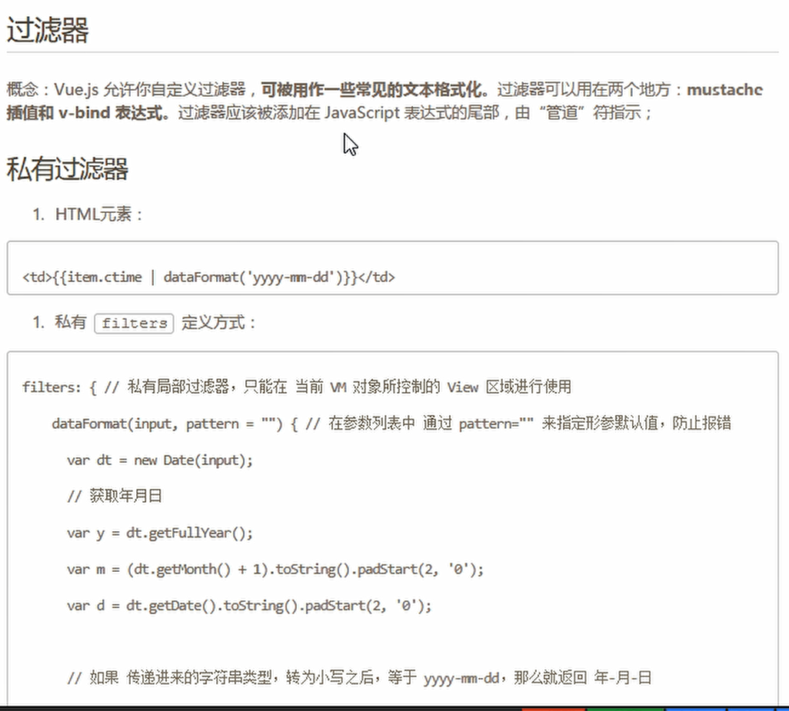

过滤器：
过滤是一个数据经过了这个过滤之后出来另一样东西，可以是从中取得你想要的，或者给那个数据添加点什么装饰。过滤器就是过滤用的工具。渲染数据用的！！！
我们需要知道的是：
1、Vue中的过滤器不能替代Vue中的methods、computed或者watch。
2、过滤器不改变真正的data，而只是改变渲染的结果，并返回过滤后的版本。
一、品牌项目的添加功能的思路（双向数据绑定）：

二、过滤器：
1、过滤器调用时候的格式：
{{ name | 过滤器的名称 }}
2、过滤器的定义语法：
Vue.filter('过滤器的名称’， function(){})
//过滤器中的function ， 第一个参数，已经被规定死了，永远都是 过滤器 管道符| 前面 传递过来的数据3、定义私有过滤器有两个条件：过滤器的名称 和 处理函数

<!DOCTYPE html>
<html lang="en">
<head>
<meta charset="UTF-8" />
<meta name="viewport" content="width=device-width, initial-scale=1.0" />
<meta http-equiv="X-UA-Compatible" content="ie=edge" />
<title>Document</title>
<script src="./lib/vue.js"></script>
</head>
<body>
<div id="app">
<p>{{ msg | msgFormat('疯狂+1','123') | test }}</p>
</div>
<script>
// 定义一个VUE全局的过滤器，名字叫 msgFormat
Vue.filter("msgFormat", function(msg, arg, arg2) {
// 字符串的replace 方法，第一个参数，除了可写一个字符串之外，还可以定义一个正则
return msg.replace(/单纯/g, arg + arg2);
});
Vue.filter("test", function(msg) {
return msg + "========";
});
var vm = new Vue({
el: "#app",
data: {
msg: "我们都是一群单纯的人，单纯的年代培养着单纯的我们"
}
});
</script>
</body>
</html>三、自定义指令：
//使用 Vue.directive() 定义的指令 v-focus
// 其中：参数1： 指令的名称，注意，在定义的时候，指令的名称前面，不需要加v-前缀
//但是,在调用的时候，必须在指令名称前，加上v-前缀来进行调用
// 参数2： 是一个对象，这个对象身上，有一些指令相关的函数，这些函数可以在特定的阶段，执行相关的操作
vue.directive("focus", {
bind: function(el) {
//每当指令绑定到元素上的时候，会立即执行这个bind 函数，只执行一次
//注意：在每个函数中，第一个参数，永远都是el，表示 被绑定了指令的那个元素，这个el参数，是一个原生的JS对象
//在元素 刚绑定了指令的时候，还没有插入到DOM中去，这时候，调用 focus 方法没有作用
//因为，一个元素，只有插入DOM后，才能获取焦点
},
inserted: function(el) {
//inserted表示元素插入到DOM中的时候，会执行 inserted 函数（触发1次）
el.focus();
},
updated: function(el) {
//当VNode更新的时候，会执行 updated，可能会触发多次
}样式，只要通过指令绑定给了元素，不管这个元素有没有被插入到页面中去，这个元素肯定有了一个内联的样式，将来元素肯定会显示到页面中，这时候，浏览器的渲染引擎必然会解析样式，应用给这个元素。
详情见菜鸟教程有关钩子函数介绍https://www.runoob.com/vue2/vue-custom-directive.html
钩子函数的参数有：
v- 前缀。v-my-directive="1 + 1", value 的值是 2。update 和 componentUpdated 钩子中可用。无论值是否改变都可用。v-my-directive="1 + 1" ， expression 的值是 "1 + 1"。v-my-directive:foo， arg 的值是 "foo"。v-my-directive.foo.bar, 修饰符对象 modifiers 的值是 { foo: true, bar: true }。update 和 componentUpdated 钩子中可用。
//获取焦点的字体颜色变成指定的颜色！
Vue.directive("color", {
bind: function(el, binding) {
el.style.color = binding.value;
}
});